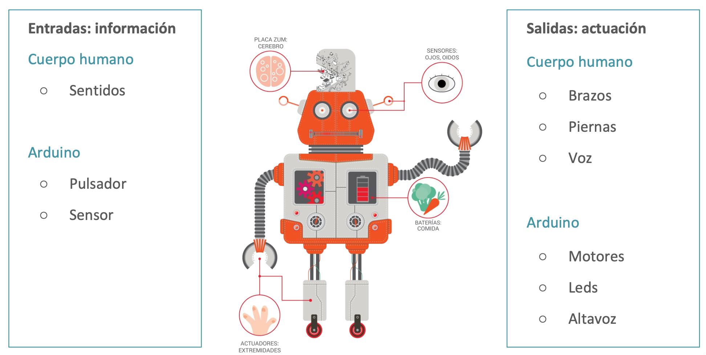
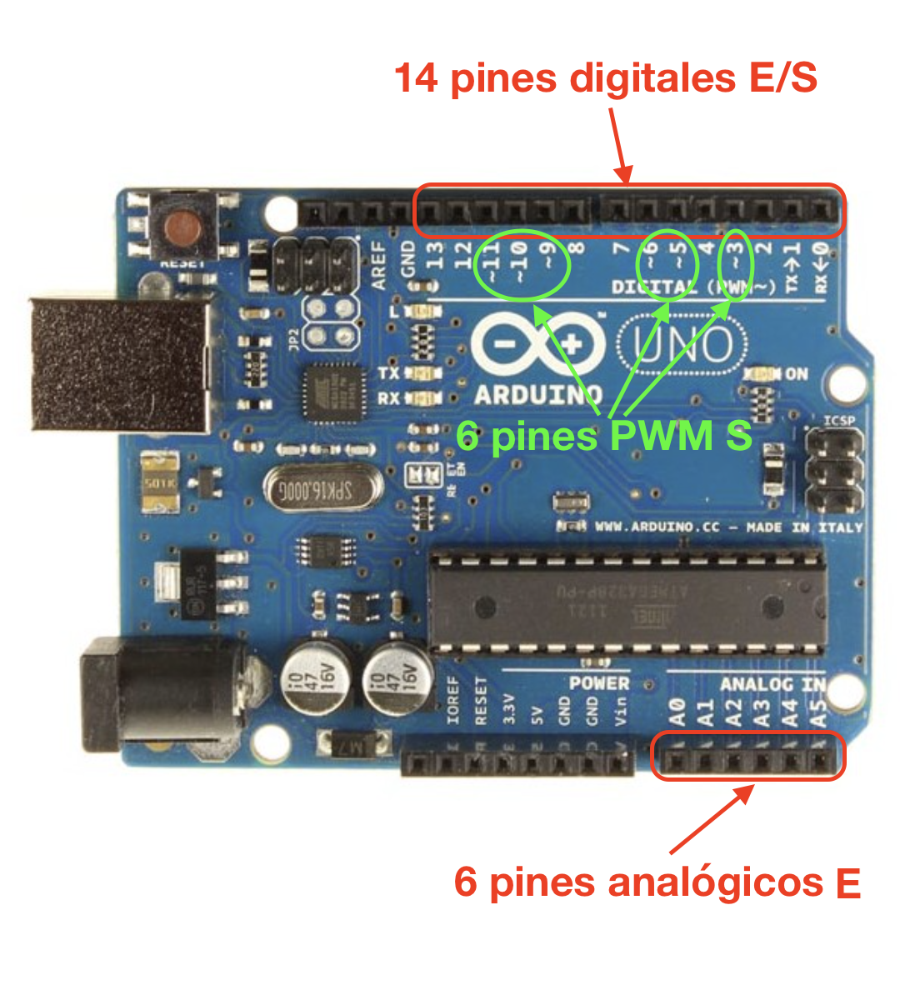
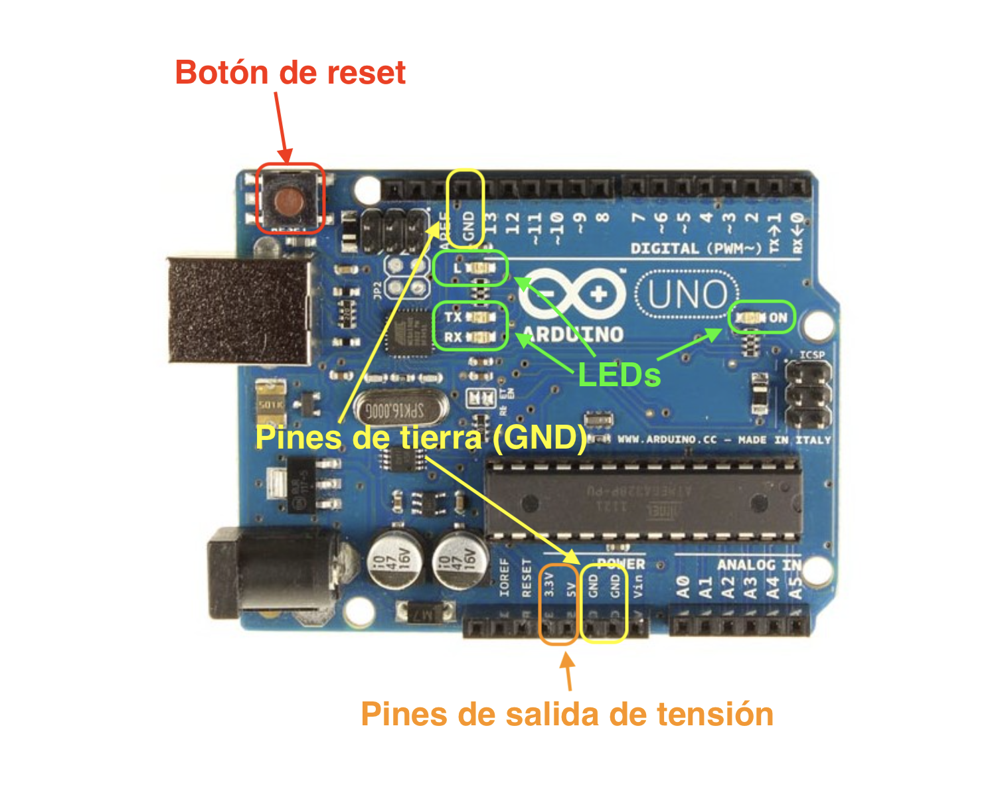
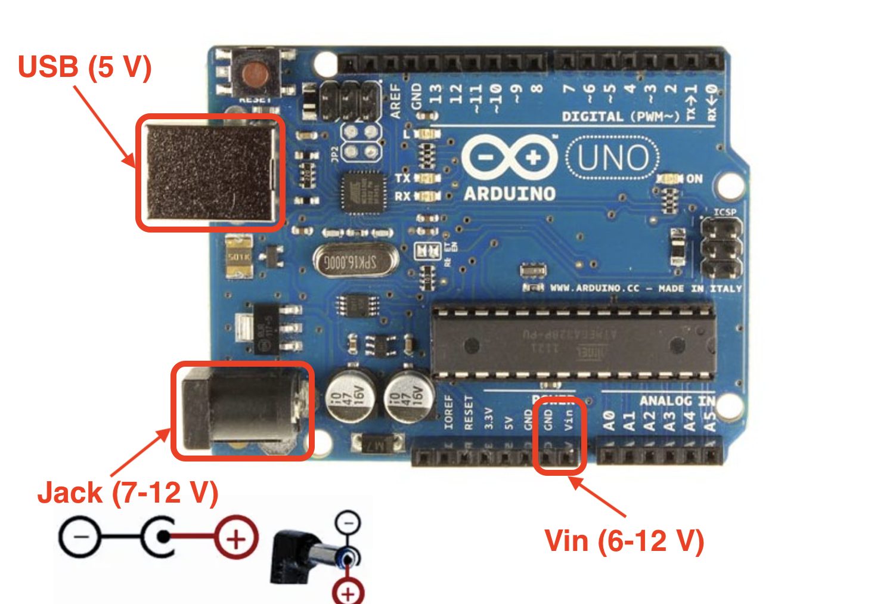
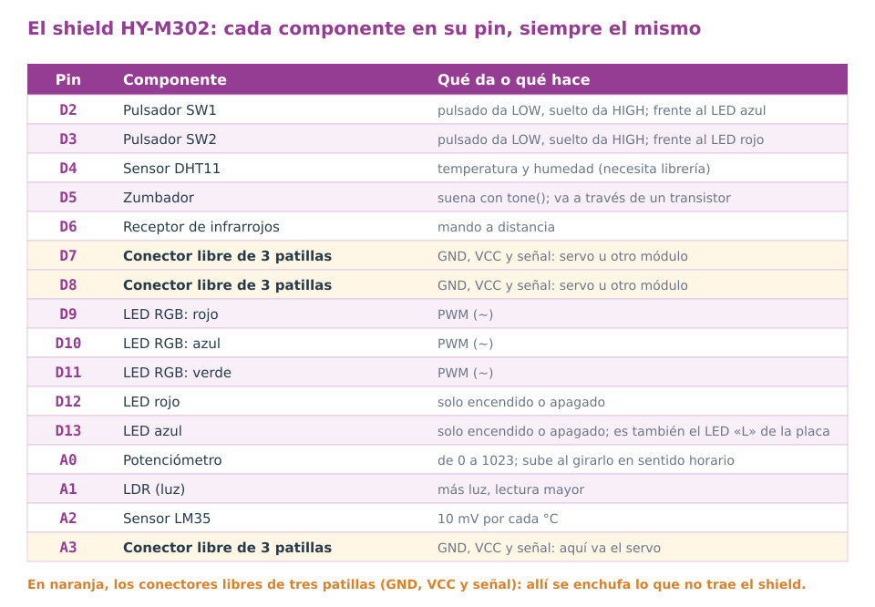
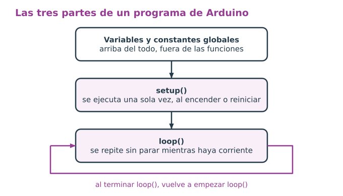
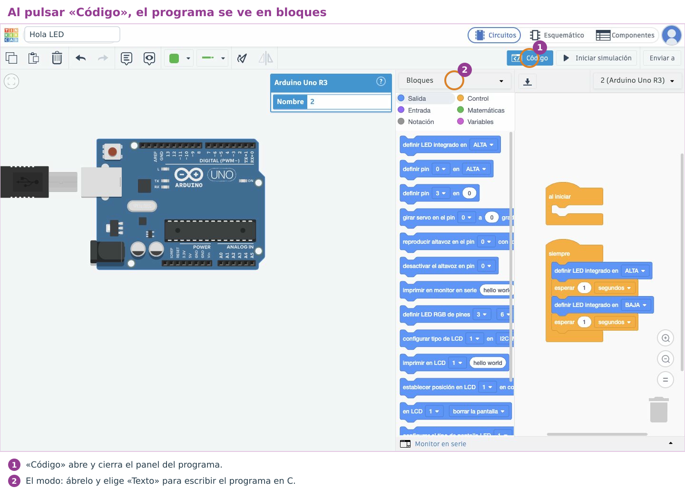
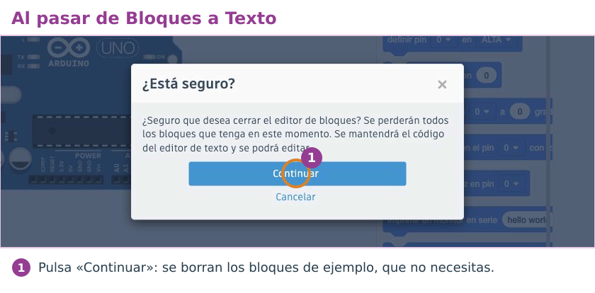
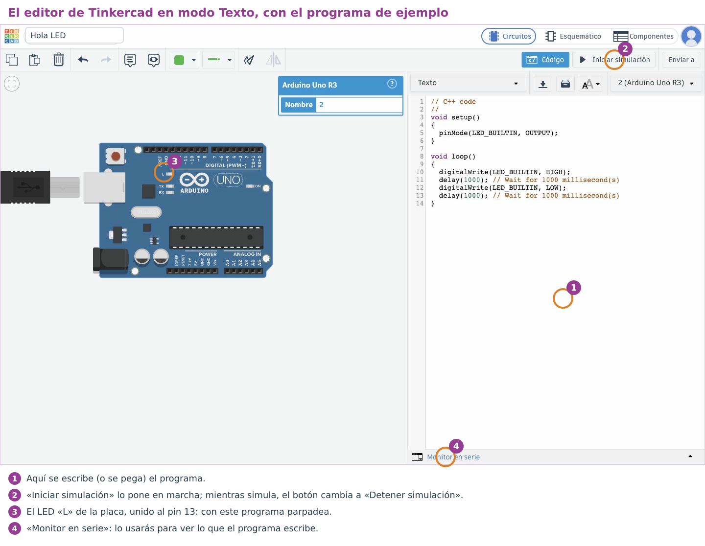
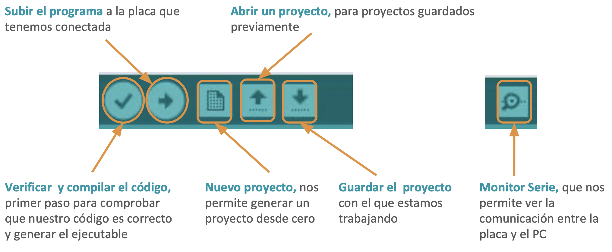

Qué vas a conseguir en esta página
Conocer la placa Arduino UNO y el shield de tu kit, entender cómo está hecho un programa de Arduino y subir tu primer programa a la placa y a Tinkercad.
Qué es Arduino
Arduino es una plataforma de hardware y software libres pensada para construir proyectos electrónicos que reaccionan a su entorno. Tiene dos partes: una placa con un microcontrolador y un entorno de programación (el Arduino IDE) con el que se escribe el programa y se envía a la placa.
Un microcontrolador es un ordenador completo en un solo chip: lleva el procesador, la memoria para el programa, la memoria para las variables y los circuitos para comunicarse con el exterior a través de sus pines. No es lo mismo que el microprocesador de tu ordenador, que necesita chips de memoria y de entrada y salida aparte. Con un microcontrolador podemos leer sensores y gobernar actuadores según el programa que le hayamos escrito: es el controlador del diagrama de bloques de la página 1.

La placa Arduino UNO
Usarás la placa más conocida, la Arduino UNO. Al ser hardware libre, otros fabricantes hacen placas compatibles que funcionan exactamente igual aunque tengan otro color.

| Parte | Qué es |
|---|---|
| Microcontrolador ATmega328P | El chip negro y alargado de la parte de abajo. Funciona a 16 MHz y tiene 32 KB de memoria flash para el programa, 2 KB de SRAM para las variables y 1 KB de EEPROM para datos que no se borran al apagar. |
| Pines digitales 0 a 13 | Cada uno puede ser entrada o salida, y solo trabaja con dos valores: HIGH (5 V) o LOW (0 V). Los que llevan ~ (3, 5, 6, 9, 10 y 11) pueden dar además valores intermedios por PWM (página 4). |
| Entradas analógicas A0 a A5 | Leen cualquier tensión entre 0 y 5 V y la convierten en un número de 0 a 1023 (página 6). |

| Parte | Qué es |
|---|---|
| 5 V, 3,3 V y GND | Alimentan los componentes externos. GND es la referencia de 0 V, común a todo el circuito. |
| LED de la placa | ON se enciende cuando la placa tiene corriente; L está unido al pin 13; TX y RX parpadean cuando la placa envía o recibe datos por el USB. |
| Botón RESET | Reinicia la placa: el programa vuelve a empezar desde el principio. |
| Conector USB | Lleva el programa desde el ordenador y alimenta la placa a 5 V. También sirve para que la placa y el ordenador se envíen datos (página 8). |

El shield de tu kit
Un shield es una placa que se encaja encima del Arduino y le añade componentes ya montados. El de tu kit, el HY-M302, trae LED, pulsadores, un zumbador y varios sensores, cada uno conectado siempre al mismo pin. Gracias a él no tienes que cablear nada para empezar: solo saber a qué pin está cada cosa.

Que el shield no toque el conector USB
Mira la placa de lado: las patillas que asoman por debajo del shield no pueden tocar la carcasa metálica del conector USB del Arduino. Si la tocan, se produce un cortocircuito y aparecen fallos extraños, como un pulsador que parece estar siempre pulsado. Si ves que se tocan, separa un poco el shield sin sacarlo o pon un trozo de cinta aislante sobre el conector USB.
Cómo es un programa de Arduino
Un programa de Arduino se llama sketch. Siempre tiene la misma estructura, en tres partes:

| Parte | Qué se pone ahí |
|---|---|
| Variables y constantes globales | Arriba del todo, fuera de las funciones. Se pueden usar en cualquier parte del programa. |
void setup() { … } | Se ejecuta una sola vez, al encender o reiniciar la placa. Aquí se dice qué pines son entradas y cuáles salidas (con pinMode) y se preparan las librerías. |
void loop() { … } | Se repite sin parar mientras la placa tenga corriente. Es el programa principal. |
Frente a lo que has visto en Python, fíjate en tres diferencias: cada instrucción termina en punto y coma (;), los bloques se marcan con llaves { } y no con sangría, y cada variable se declara con su tipo.
Variables, tipos y constantes
Una variable se declara indicando su tipo, su nombre y, si quieres, su valor inicial:
tipo nombreVariable = valor;
int retardo = 500;| Tipo | Qué guarda (en Arduino UNO) | Ejemplo |
|---|---|---|
bool | Verdadero o falso (true / false). | bool encendido = false; |
byte | Un entero sin signo de 8 bits: de 0 a 255. | byte brillo = 180; |
int | Un entero de 16 bits: de −32 768 a 32 767. | int lectura = 512; |
long | Un entero de 32 bits: hasta unos ±2 100 millones. | long pasos = 900000; |
unsigned long | Un entero de 32 bits sin signo: de 0 a unos 4 300 millones. | unsigned long t = millis(); |
float | Un número decimal, con unas 6 o 7 cifras exactas. El separador es el punto. | float voltios = 2.5; |
char | Un solo carácter, entre comillas simples. | char letra = 'a'; |
String | Un texto, entre comillas dobles. | String mensaje = "Hola"; |
Fíjate en el rango de int: en Arduino UNO no pasa de 32 767. Si guardas en un int un tiempo de 40 000 milisegundos, el número «da la vuelta» y sale negativo. Para tiempos largos se usa unsigned long.
Si un valor no va a cambiar nunca (por ejemplo, el pin al que está conectado un LED), declara una constante con const. Si por error intentas cambiarla, el programa no compila y te darás cuenta enseguida:
const int LED_AZUL = 13;Dentro de setup(), la función pinMode(pin, modo) dice si un pin será salida (OUTPUT) o entrada (INPUT). Dentro de loop(), digitalWrite(pin, valor) pone una salida a HIGH (5 V) o a LOW (0 V), y delay(ms) detiene el programa durante los milisegundos que le digas.
Tu primer programa en Tinkercad
Antes de usar la placa, vas a probar el programa en Tinkercad. Entra en la clase (los pasos están en la Bienvenida) y sigue estos pasos:
- Pulsa + Crear y elige Circuitos. Arriba a la izquierda, cambia el nombre del diseño por Hola LED.
- En el panel de componentes de la derecha, busca Arduino Uno R3 y arrástralo al área de trabajo.
- Pulsa Código. El programa aparece en bloques.

- Abre el desplegable del modo (donde pone Bloques) y elige Texto. Aparece un aviso: pulsa Continuar.


Tinkercad te deja escrito un programa de ejemplo que hace parpadear el LED «L» una vez por segundo. LED_BUILTIN es una constante que Arduino ya trae definida y vale 13, el pin del LED «L». Pulsa Iniciar simulación y míralo parpadear. Púlsalo otra vez para detenerla.
Práctica 0: Hola, LED
El «Hola, mundo» de Arduino no escribe ningún mensaje: hace parpadear un LED. Vas a reescribir el programa de ejemplo para que se entienda mejor. Hazlo en Tinkercad, en tu diseño Hola LED.
- Un bloque de comentarios al principio. Lo que va entre
/*y*/es un comentario: el compilador lo ignora y no ocupa memoria en la placa. Úsalo para explicar qué hace el programa y quién lo ha escrito (pon tus iniciales, no tu nombre completo). - Comentarios de una línea. Todo lo que va detrás de
//hasta el final de la línea es un comentario. Úsalos para explicar qué hace una instrucción concreta. - Una constante con nombre. Cambia
LED_BUILTINpor una constante tuya,LED_AZUL, que valga 13: en tu shield, el pin 13 es el del LED azul. - Una variable para el ritmo. En lugar de escribir 1000 en los dos
delay(), crea una variableretardoMilisegundosy úsala en los dos. Dale el valor 350. Así, para cambiar el ritmo, solo hay que tocar un número.
Un buen programa casi no tiene números sueltos: casi todos tienen un nombre que dice qué significan.
¿Te has atascado? Abre aquí el programa con huecos
Es el programa de la práctica con algunas partes borradas. Cada ____ es una palabra, un número o un signo que ya has visto en esta página. Cópialo, sustituye cada hueco por lo que falta y pruébalo. Intenta primero hacerlo sin abrir esto: se aprende mucho más.
/*
Práctica 0: Hola, LED
Hace parpadear el LED azul del shield (pin 13), que es también
el LED «L» de la placa.
Autoría: tus iniciales
*/
const int LED_AZUL = 13; // pin del LED azul del shield
int retardoMilisegundos = ____; // tiempo encendido y apagado, en ms
void setup() {
pinMode(LED_AZUL, ____); // el pin 13 será una salida
}
void loop() {
digitalWrite(LED_AZUL, ____); // enciende: 5 V en el pin
delay(retardoMilisegundos); // espera
digitalWrite(LED_AZUL, LOW); // apaga: 0 V en el pin
delay(____);
}Ver el programa terminado
/*
Práctica 0: Hola, LED
Hace parpadear el LED azul del shield (pin 13), que es también
el LED «L» de la placa.
Autoría: tus iniciales
*/
const int LED_AZUL = 13; // pin del LED azul del shield
int retardoMilisegundos = 350; // tiempo encendido y apagado, en ms
void setup() {
pinMode(LED_AZUL, OUTPUT); // el pin 13 será una salida
}
void loop() {
digitalWrite(LED_AZUL, HIGH); // enciende: 5 V en el pin
delay(retardoMilisegundos); // espera
digitalWrite(LED_AZUL, LOW); // apaga: 0 V en el pin
delay(retardoMilisegundos);
}Súbelo a tu placa
- Conecta tu Arduino al ordenador con el cable USB. El shield ya va puesto.
- Abre el Arduino IDE, crea un programa nuevo y pega el tuyo en lugar de lo que aparezca.
- En Herramientas → Tarjeta, elige Arduino Uno.
- En Herramientas → Puerto Serial, elige el puerto de la placa. En estos ordenadores se llama
/dev/ttyACM0o/dev/ttyUSB0. Si solo aparece/dev/ttyS0, la placa no está bien conectada: revisa el cable. - Pulsa el botón Cargar (la flecha hacia la derecha). Abajo verás «Compilando el Sketch...», después «Cargando...» y, cuando ha terminado, Carga terminada.
- El LED azul del shield parpadea, y con él el LED «L» de la placa.

Si algo no funciona
| Lo que ves | Qué compruebas |
|---|---|
| Sale un error al cargar y nada más | ¿Has elegido la tarjeta y el puerto? Desconecta el USB, vuelve a conectarlo y míralo otra vez en Herramientas → Puerto Serial. |
| Sale un error que señala una línea | Mira esa línea y la anterior: casi siempre falta un ; o una llave. |
| Se sube bien pero no parpadea | ¿Usas el pin 13? ¿Has escrito HIGH, LOW y OUTPUT en mayúsculas? |
Tarea 0 · Modifica el «Hola, LED» (de práctica)
Partiendo de tu Práctica 0:
- Crea dos variables para el retardo, una para el tiempo encendido y otra para el tiempo apagado, con nombres que digan lo que son.
- Haz que el LED azul esté encendido medio segundo y apagado un cuarto de segundo.
- Añade los comentarios que hagan falta para que otra persona entienda el programa.
Pruébalo en Tinkercad y en la placa. Esta tarea no se entrega ni cuenta para la nota: es tu entrenamiento.
Lo que tienes que saber de esta página
- Arduino UNO lleva un microcontrolador ATmega328P a 16 MHz; sus pines digitales dan 0 V o 5 V y sus entradas analógicas leen de 0 a 5 V.
- El shield HY-M302 tiene cada componente siempre en el mismo pin.
- Un sketch tiene variables globales, setup() (una vez) y loop() (sin parar).
- Cada instrucción acaba en ; y cada variable se declara con su tipo; un int de Arduino UNO no pasa de 32 767.
- pinMode prepara un pin, digitalWrite lo pone a HIGH o LOW y delay espera milisegundos.